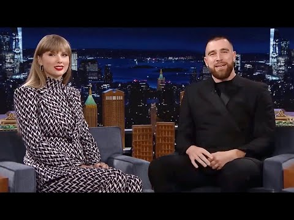

来B站一起耍【Global每日英语简报】
【泰勒·斯威夫特和特拉维斯·凯尔斯在《深夜秀》中回应恋爱传闻】
Summary: Taylor Swift and Travis Kelce discuss their dating rumors on The Late Late Show, confirming their relationship after months of speculation and playful banter about how it began.
摘要： 泰勒·斯威夫特和特拉维斯·凯尔斯在《深夜秀》中谈论恋爱传闻，经过数月的猜测后确认关系，并调侃了两人相识的经过。

⏱️ Estimated Reading Time: 2 min
I'm your host Gary dumbbell and you're watching The Late Late Show.
我是主持人加里·邓贝尔，欢迎收看《深夜秀》。
Taylor Swift and Travis Kelsey are joining me tonight to talk about the fact that you two are officially dating.
今晚泰勒·斯威夫特和特拉维斯·凯尔斯将与我一起聊聊你们正式交往的事实。
I think it's just uh oh come on just confirm it.
我觉得，呃，拜托，直接承认吧。
I don't see why it is such a big deal to just confirm it would I just uh announce yeah just announce it when it's time we'll do it.
我不明白为什么承认这件事这么难，到时候我们自然会公开。
You guys have been very low-key with this rumor for quite a while now but come on it became pretty obvious that there is romance between the two of you after seeing you Taylor at Travis NFL match yesterday take a look at this.
你们对传闻一直很低调，但拜托，昨天看到泰勒出现在特拉维斯的NFL比赛后，很明显你们之间有恋情，看看这个。
So you were just there chilling for no reason.
所以你只是无缘无故在那儿闲逛。
I think we've just stopped pretending it's accidental at this point so it's finally official.
我觉得我们已经不再假装这是巧合了，现在终于正式公开了。
So Travis can you tell us how it all started between the two of you to have a chance at Taylor.
特拉维斯，你能告诉我们你们是怎么开始的吗？你是怎么追到泰勒的？
I'm pretty sure that you must have had a pretty good pickup line started it started with the hey do you uh do you drink beers I like to drink beer.
我猜你一定用了很棒的搭讪开场白，比如“嘿，你喝啤酒吗？我喜欢喝啤酒。”
I mean to me that sounded like the worst pickup line of the century.
对我来说，这听起来像是本世纪最烂的搭讪。
[Applause] some reason you fell for it Taylor but it doesn't surprise me since you have dated a lot of bad boys in your past.
（掌声）不知为何你居然上钩了，泰勒，但这不奇怪，毕竟你过去交往过很多坏男孩。
I guess we have to wait and see if this will be a long-term relationship or just another opportunity for Taylor to write a new best-selling album.
我们只能等着看这段关系是长久发展，还是泰勒又一次创作畅销专辑的机会。
Well that was everything for tonight see you guys next week thank you for watching.
今晚的节目就到这里，下周见，感谢收看。
[Music]
（音乐）